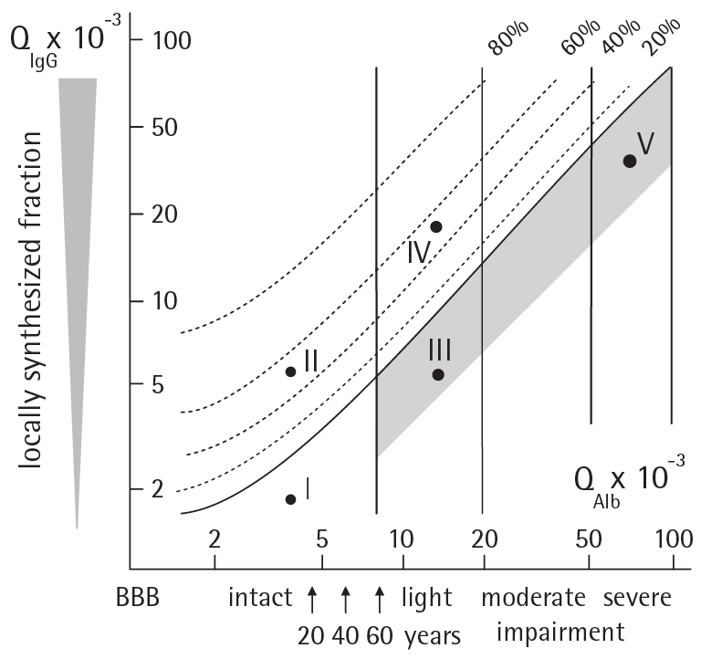

CSF/Serum Ratio (mod. per Felgenhauer and Beuche)

I: Normal range
II: Intrathecal Ig-synthesis without blood-brain
barrier (BBB) impairment
III: Light BBB dysfunction (eg, viral meningitis)
IV: Intrathecal Ig-synthesis (50%) with BBB impairment
V: Severeblood-brainbarrierimpairment (eg, bacterial meningitis)